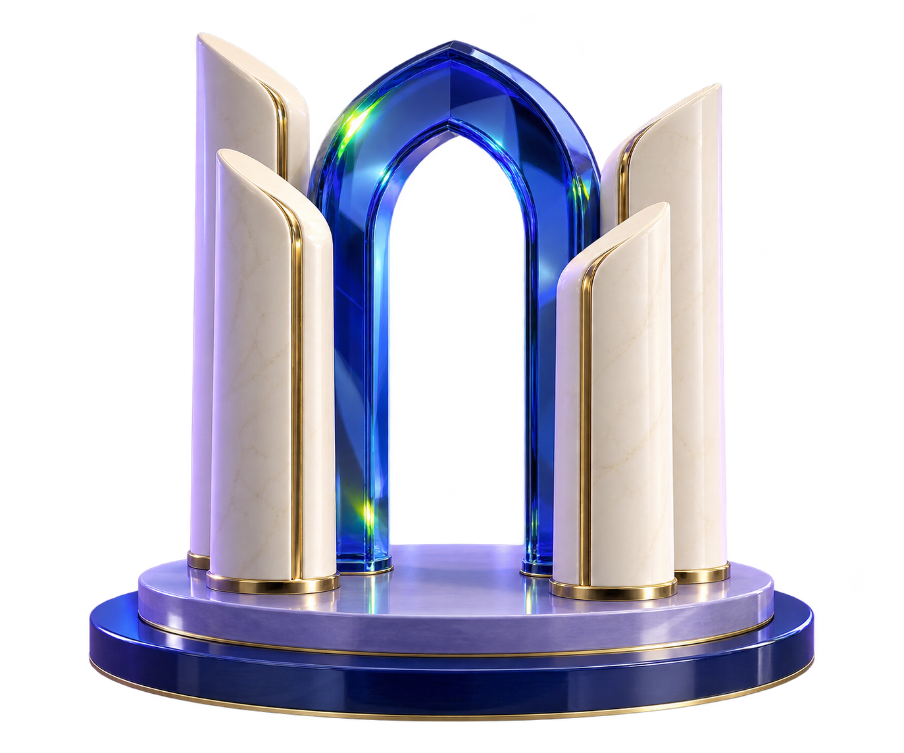

Civil Service BoardOctober 2026
The future ofpublic-sectorrecruitment.
- Prepared for
- Civil Service Board, Lebanon
- Format
- Strategic discussion
- Focus
- Assessment and institutional decision-making

Civil Service BoardInstitutional authorityFairnessMeritIntegrityAccountability
01The institution
Recruitment ismore than anexamination.
Four principles. One institutional responsibility.
01 / 06PrincipleFairness
Announcement
Clear opportunities and requirements support fair access.
↓Next stage
Discussion map. Confirm the Board’s procedures and responsibilities in discovery.
02A discovery conversation
Five challenges.Five opportunities.
Which of these matters most in your recruitment cycles?
0 / 5 explored
02ChallengeOpportunity
Examination integrity
Stronger control, security and auditability.
03ChallengeOpportunity
Assessment quality
More consistent evaluations aligned with the role.
04ChallengeOpportunity
Candidate experience
Clearer and more accessible recruitment journeys.
05ChallengeOpportunity
Limited analytical visibility
Better evidence for institutional decisions.
Common recruitment challenges, not findings about the Board’s performance.
03The proposed change
One connectedrecruitment journey.
Separate activities. Important handoffs.
- 01DiscoverClear opportunities
- 02ApplyStructured records
- 03QualifyAuthorized screening
- 04AssessRelevant evidence
- 05EvaluateControlled review
- 06DecideInstitutional authority
- Simpler operations
- Stronger assessment
- Greater transparency
- Better intelligence
Concept for discussion. Integrations, controls and responsibilities require agreement.
04The candidate experience
Behind one candidate,an entireoperating system.
Hypothetical applicant 01 / 06
Apply
Submits an application.
Hypothetical applicant. Responsibilities shown are proposed for discussion.
Competency frameworkAssessment blueprintQuestion developmentIndependent reviewBoard approvalDocumented scoringExamination day
05Assessment credibility
Quality beginsbefore examination day.
01 / 03 Relevant competencies
Assess what the position requires.
Define the role, translate requirements into a competency framework, then agree evidence and scoring criteria.
Foundation 1 / Competency frameworkBefore examination dayExamination day
UNRWA report, pp. 29–32: assessment structure, question development and independent review.
Illustrative result74/10074/100Overall result, reported separatelyAnalytical reasoning85%Digital literacy78%Domain knowledge82%Communication70%This profile160 synthetic profiles · grouped by strongest dimension0Analytical reasoning0Digital literacy0Domain knowledge0Communication
06Talent intelligence
A score tells us how much.Intelligence helps explain why.
01 / 03 Score
One result. A first question.
What capabilities sit behind this examination result?
- Illustrative result
- 74/100
- Analytical reasoning
- 85%
- Digital literacy
- 78%
- Domain knowledge
- 82%
- Communication
- 70%
Illustrative data. No real candidate or workforce records. Competency reporting requires validated assessments.
01Question control02Quality assurance03Data protection04Continuity05Result approval06Incident response
07Questions before implementation
Innovation must earninstitutional trust.
Choose the safeguards you want to examine.
Board-appointed examination committees, defined permissions and approval gates.
Assessment blueprints, expert review and documented quality assurance.
Agreed hosting, access controls, encryption and audit trails, subject to security review.
Tested infrastructure, contingency procedures and rehearsed recovery plans.
The Board controls official result approval and release.
Defined response procedures, escalation routes and operational accountability.
00 / 06 safeguards in place
Proposed safeguards. Technical and institutional requirements to agree with the Board.
08Documented UNRWA experience
From visionto execution.
Technology supported by people.
The report documents identity checks, QR-based routing, assigned seats and devices, help-desk support and coordinated room operations.
UNRWA report, pp. 24 and 35–36943candidates examined
up to 1,400prepared capacity
3examination days
Same dayscore release reported
Source: supplied UNRWA project report, pp. 22–27, 29–36 and 39. Figures describe that examination cycle.
09ELMY Learning Solutions
Technology supported byacademic and operationalexpertise.
Our vision
To be the Middle East’s most trusted partner for better learning.
Our mission
We help educational institutions raise learning outcomes through intelligent digital resources, technology and academic expertise.
Start hereBroader use · separate decision
10The next decision
Meaningful transformation.A controlled first step.
01
Phase 01 of 05 · Understand
Map one process in detail.
Agree priorities, existing procedures, constraints and institutional counterparts.
Checkpoint · Shared process map and scope.For discussion
Which recruitment process should we understand together first?
For discussionThe next decision
Which recruitment processshould we understandtogether first?
Proposed next action
Agree on one process to map, name the institutional counterparts, and hold a discovery session before defining a pilot.
Thank you.
Civil Service Board × ELMYStrategic discussion · October 2026
Proposed roadmap. No pricing, commercial commitment or implementation authorization implied.